操作系统进程线程复习
程序顺序执行特征
- 顺序性：按照程序结构所指定的次序执行
- 封闭性：独享计算机所有资源
- 可再现性：初始条件相同则结果相同
程序并发执行特征
- 间断性：并发程序具有“执行—-暂停——执行”这种间断性的活动规律。
- 非封闭性：多个程序共享资源
- 不可再现性：在初始条件相同的情况下，程序执行结果取决于执行次序
竞争
定义
多个程序在读写一个共享数据时结果依赖顺序。
判断——Bernstein条件
定义
$$R(SI)$$SI的读子集，代表着进程SI需要读的资源
$$W(SI)$$
SI的写子集，代表着进程SI需要写的资源
条件
两个进程S1和S2可并发，当且仅当下列条件同时成立：
$$\eqalign{
& R(S1) \cap W(S2) = \emptyset \cr
& W(S1) \cap R(S2) = \emptyset \cr
& W(S1) \cap W(S2) = \emptyset \cr} $$
不然就会发生竞争，运行结果将不确定。
其他定义
- 临界资源：一次只能允许一个进程访问的资源叫临界资源
- 临界区：进程中访问临界资源的那一段代码
进程
特征
- 动态性：是程序的执行过程，可生可死可睡觉
- 异步性：各自独立以不可预知的速度执行
- 并发性：和其他进程一起并发执行
- 独立性：是传统OS中独立运行的基本单位
产生
可以由Fork产生
执行状态
进程有以下三种基本执行状态。
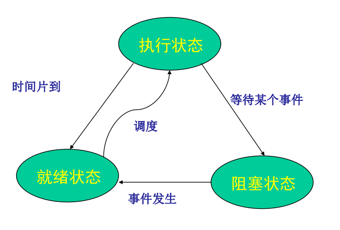
线程
定义
进程的可执行单元
引入目的
减少并发程序执行时所付出的时空开销，使得并发粒度更细、并发性更好
与进程的关系
- 1:1
- 1:M
- M:M
- M:1
实现方式
用户级线程
定义
线程在用户空间,通过library模拟的thread,不需要或仅需要极少的kernel支持。
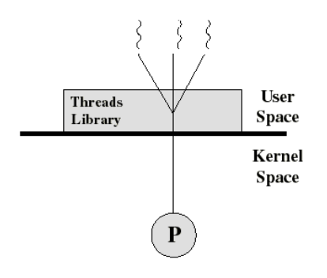
特点
优点：
- 切换无需经过内核
- 调度由程序决定
- 可运行在任何系统上
缺点：
- 内核不知用户态下线程的状态，阻塞时只能全部阻塞
- 无法实现并行执行，因为内核对其的分配以进程为单位
内核级线程
定义
内核级线程就是kernel有好几个分身,一个分身可以处理一件事
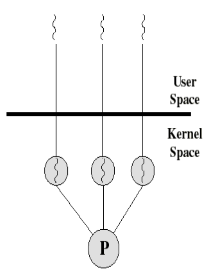
特点
优点：
- 内核感知线程，可以将线程安排到多个处理器上并行执行
- 内核感知线程，可以实现精确阻塞
- 内核中的处理可通过多线程完成。
缺点：
- 线程切换经过内核，降低了效率
混合级线程
定义
线程在用户空间创建和管理，但需要实现从用户空间的线程到内核空间线程（轻量级进程）的映射
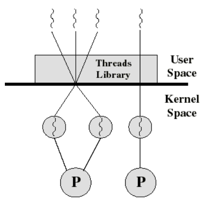
特点
折中了前面两种方法。
进程同步与互斥
互斥是由于访问临界资源而产生的关系，不是人为的，是为了保证正确性，且不保证顺序。
同步是人为设置的次序，为了合作完成某一任务，保证顺序。
忙等待互斥算法
面包店算法
设置一个发号器，按由小到大的次序发放号码。进程进入临界区前先抓取一个号码，然后按号码从小到大的次序依次进入临界区。若多个进程抓到相同的号码则按进程编号依次进入。1
2
3
4
5
6
7
8
9
10
11
12
13
14
15
16
17
18Entry Section (i) { // i → process i
while (true) {
Choosing[i] = 1;
Number[i] = 1 + max(Number[1],...,Number[N]);
Choosing [i] = 0;
for (j=1; j＜=N; ++j) {
while (Choosing[j] != 0) { }
// wait until process j receives its number,等待所有进程抓号完毕
while ((Number[j]!=0) && ((Number[j],j) ＜(Number[i],i))) { }
// wait until processes with smaller numbers, or with the
// same number, but with higher priority, finish their work
// 还有比该进程号小的，或者号相同但是编号大的没访问临界区，所以继续忙等
}
// critical section... 临界区
Number[i] = 0;
// non-critical section... 非临界区
}
}
TS指令
是一种不可中断的基本原语（指令）。它会写值到某个内存位置并传回其旧值。
语义
1 | TestAndSet(boolean_ref lock) { |
可行的互斥实现
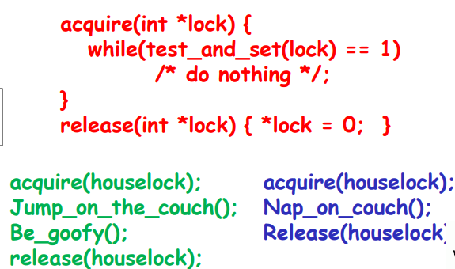
houselock的值为0，假如绿色进程先acquire，那么就会得到houselock的0值，并改houselock的值为1，由于不满足while条件，绿色进程进入了临界区。此时红色进程进行acquire，就会得到houselock的1值，并改houselock的值为1，满足while条件，触发忙等待。直到绿色进程将houselock的值改为0，破坏了红色进程的忙等。
Swap指令
语义
1 | Swap(boolean *a, Boolean *b) |
可行的互斥实现
1 | Boolean k = true; // 初始化为1，局部变量 |
第一个进程进来时，k为1，use为0，进行交换后，k变为了0，use变为了1，不满足while条件，进入临界区，此时第二个进程执行swap，由于k和use都是1，所以交换后k还是1，满足while条件，进行忙等，直到第一个进程执行swap，把use变为0，才会破坏第二个进程的忙等。
忙等互斥缺陷
- 忙等:浪费CPU资源
- 会造成优先级反转
信号量互斥算法
信号量
定义
是一个确定的二元组(s, q)，其中s是一个具有非负初值的整型变量，q是一个初始状态为空的队列。
q是一个初始状态为空的队列，当有进程被阻塞时就会进入此队列。
使用中，s为正代表还有几个资源可用，为负代表队列中有几个进程在等待。
分类
- 二元信号量，取值仅为0，1。主要用于互斥，你可以认为他就是锁
- 一般信号量，取值不限，初值为可用物理资源的总数，用于进程间的协作同步问题。
信号量集
AND型信号量集
将进程需要的所有共享资源一次全部分配给它；待该进程使用完后再一起释放。
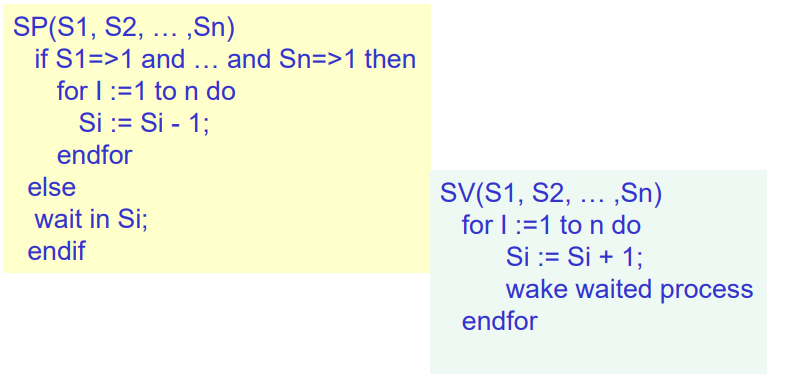一般信号量集
在AND型信号量集的基础上进行扩充：进程对信号量Si的测试值为ti（用于信号量的判断，即Si >= ti，表示资源数量低于ti时，便不予分配），占用值为di（用于信号量的增减，即Si = Si - di和Si = Si + di）
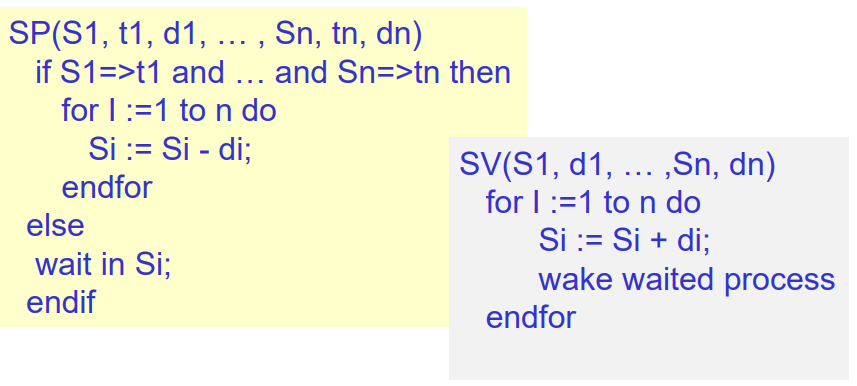
管程互斥算法
在我看来，管程是对信号量的一种包装，屏蔽了信号量比较难用的缺点，同时扩展了信号量
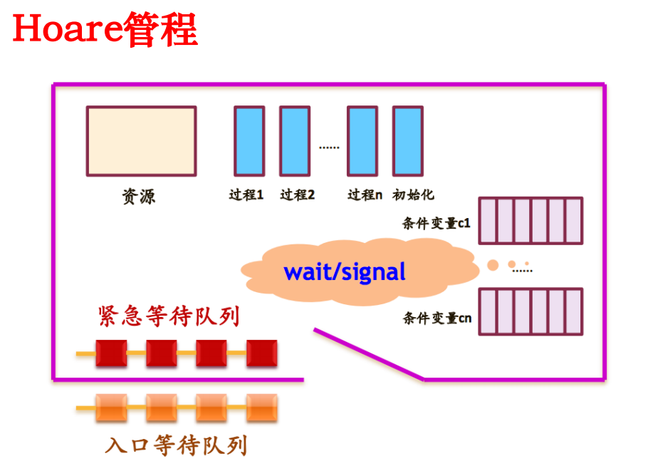
进程间通信
低级通信
信号量，管程，传递一些状态和整数都是低级通信
高级通信
管道、共享内存、消息系统是高级通信。
管道
无名管道
- 半双工管道，只能单向传递信息。
- 只能用于父子进程或者兄弟进程之间通信
- 本质上是一个文件，一个存在于只内存中的文件
- 写入是写在末尾，读出是从头部读
有名管道
- 克服无名管道通信对象的限制
- 仍然是一个文件
消息传递
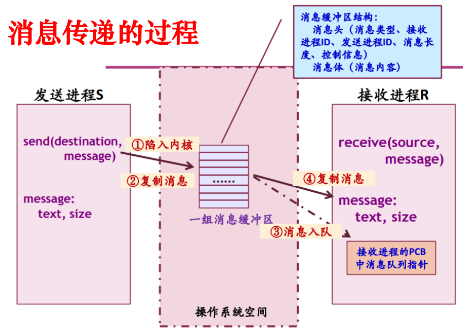
共享内存
- 是最有用的进程间通信方式，是最快的IPC形式，避免了其他通信用到的复制操作
- 通过映射同一物理空间实现
- 这是一种共享，一次写入对所有进程都可见，所以需要同步和互斥
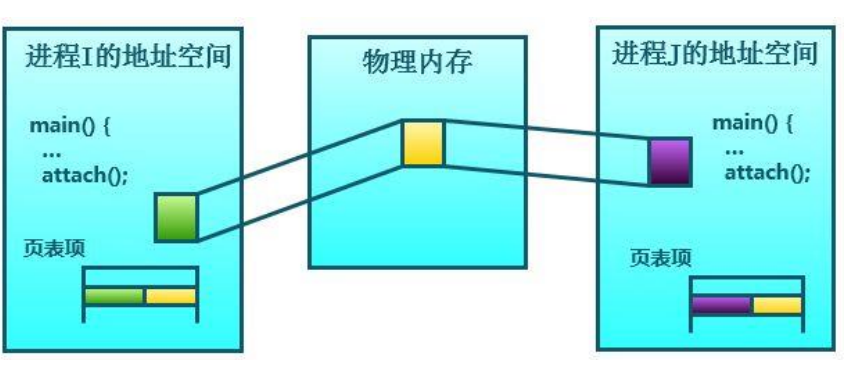
经典同步互斥问题
生产者——消费者
问题描述
若干进程通过有限的共享缓冲区交换数据。其中，“生产者”进程不断写入，而“消费者”进程不断读出；共享缓冲区共有N个；任何时刻只能有一个进程可对共享缓冲区进行操作。
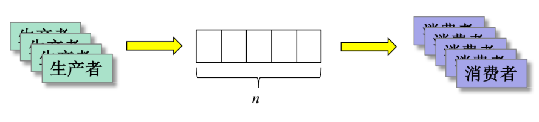
完整写法
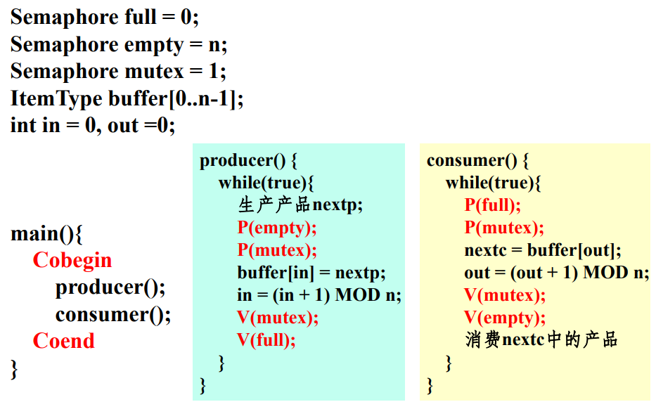
读者——写者
问题描述
对共享资源的读写操作，任一时刻“写者”最多只允许一个，而“读者”则允许多个。
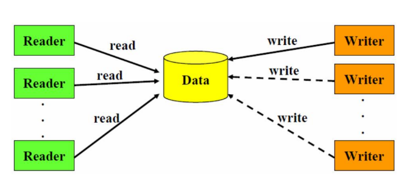
完整写法
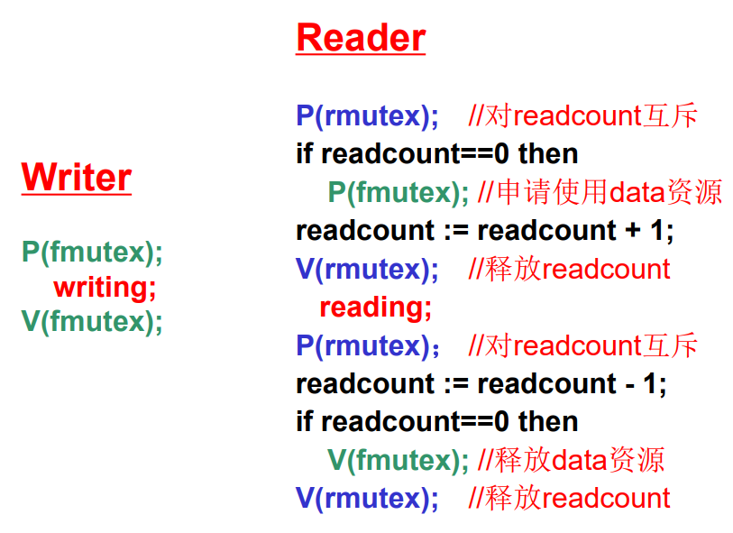
哲学家进餐问题
问题描述
5个哲学家围绕一张圆桌而坐，桌子上放着5支筷子，每两个哲学家之间放一支；哲学家的动作包括思考和进餐，进餐时需要同时拿起他左边和右边的两支筷子，思考时则同时将两支筷子放回原处。如何保证哲学家们的动作有序进行？如：不出现相邻者同时要求进餐；不出现有人永远拿不到筷子。
解决思路
- 设置信号量值为4的信号量，代表只允许同时4个哲学家进餐，这样总会有人拿到两根筷子吃饭并释放
- 对筷子编号，奇数号先拿左，偶数号先拿右。
- 同时拿两根筷子，要么就一根不拿。